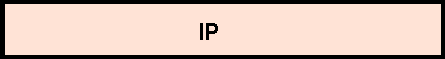

The Transmission Control Protocol (tcp) Group (1.3.6.1.2.1.6)
The
tcp
subtree is made up of some individual configuration and statistic
variables and a table that records TCP connection activity.
TCP Configuration Variables
The four first variables are TCP configuration parameters.
These are about :
-
the algorithm used to determine the timeout value used for retransmission of
unacknowledged octets
-
the minimum and maximum values permitted by a TCP implementation for the
retransmission timeout (in milliseconds)
-
the limit on the total number of TCP connections the system can support
TCP Connection Statistics
An outgoing TCP connection is requested whenever a user asks for a
connection-oriented service such as telnet terminal access or ftp file
transfer. The tcpActiveOpens counts these outgoing connection requests.
Remote users may also access the local computer in order to log in, perform
file transfer, pick up mail, or get the network news. A server runs as a
background task, waiting for remote users to connect and request access. The
tcpPassiveOpens counts these incoming requests.
TCP Incoming and Outgoing Traffic Counts
The traffic counts of incoming and outgoing segments can provide a idea of the
network health of a host. For example, a large number of retransmissions is a
sure sign of trouble.
The figure below is a
Case diagram
that shows the flow of segments.
Segments are counted as they arrive from the network. Some are discarded during
error screening, and the rest is delivered to their destination ports.


Case diagram showing segment flows
The TCP Connection Table
The TCP connection table provides information about the current TCP connections
produced by local and remote network management stations. Its variables provide
information about :
-
The current state for the connection
-
The local and remote
IP
address for the connection
-
The local port and remote number for the connection